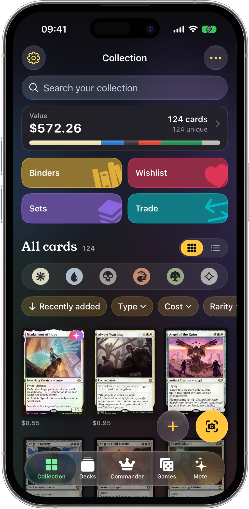
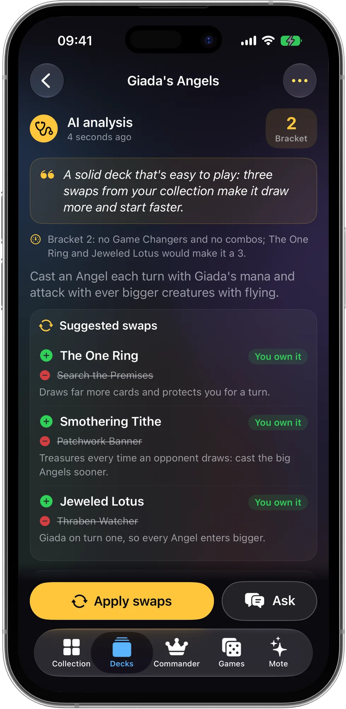
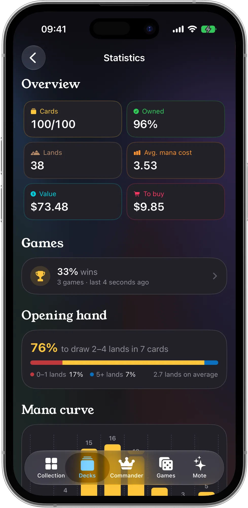
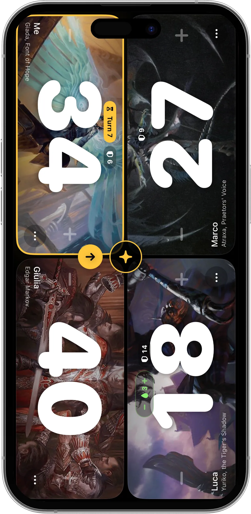
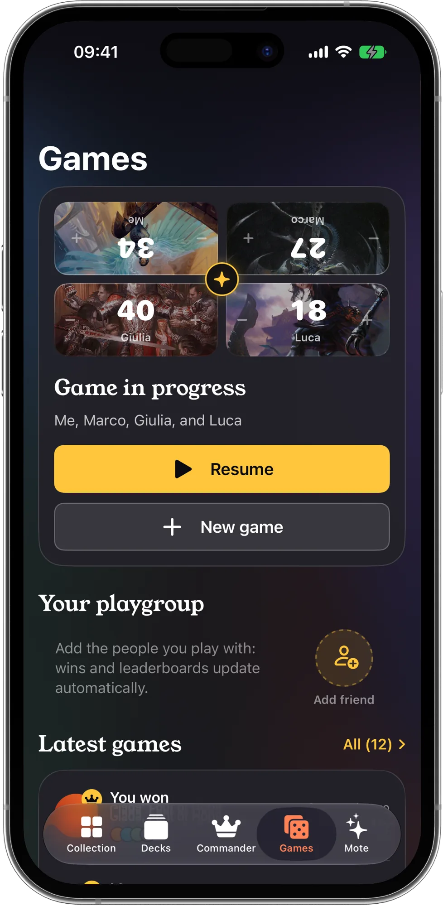
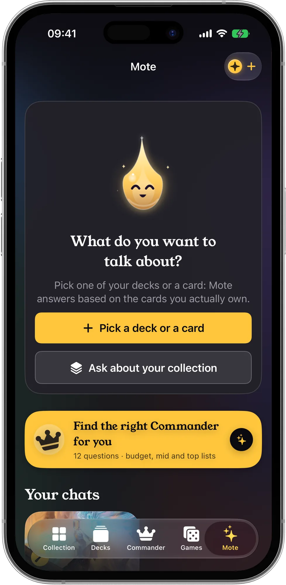
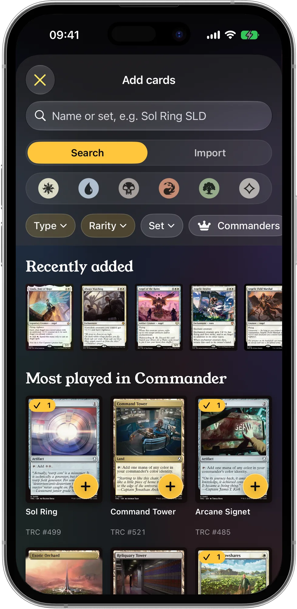
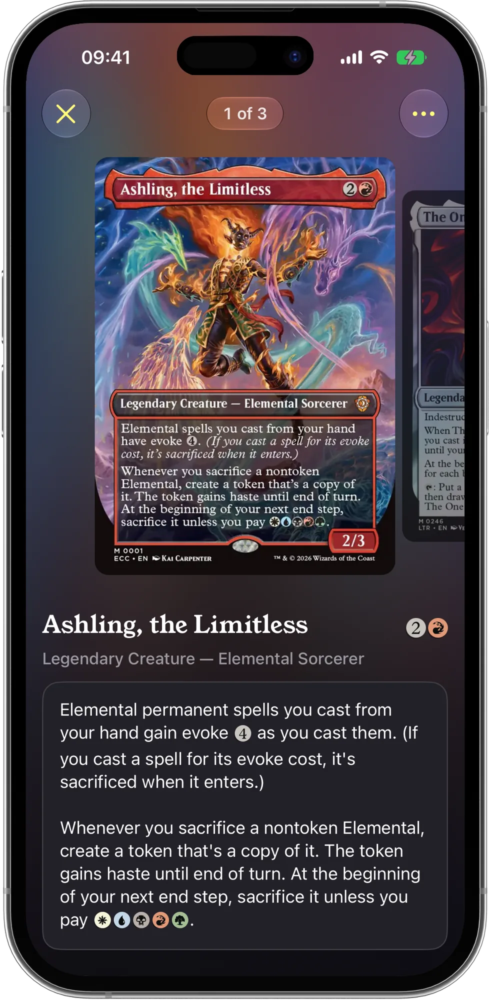

Kartlarını tanıyan Magic uygulaması
Magic: The Gathering koleksiyonunu tara, değerini öğren, zaten sahip olduğun kartlarla Commander desteleri kur ve her oyunu kaydet. Yapay zekâ deste uzmanın Mote, senin kartlarına bakarak cevap verir.
Çok yakındaApp Store'daÜcretsiz indirme · iPhone ve iPad · iOS 18 veya üstü
- Kart tarayıcı
- Commander can sayacı
- Çevrimdışı kurallar
- Arkadaşlarınla oyna
- 14 dil
- iCloud eşitleme

Koleksiyon, desteler ve oyunlar tek bir ücretsiz uygulamada
Tablolara, üç farklı uygulamaya ve can puanı için kâğıt kaleme son. ManaPal her şeyi bir arada tutar ve asistanı cevap vermeden önce kartlarına bakar.
Çok yakındaApp Store'da
- Tara ve değerini görKamerayı kartlara sırayla tut: hiç durmadan fiyatlarıyla birlikte eklenirler. Koleksiyonunun toplam değerini zaman içinde takip et.
- Elindeki kartlarla destelerMote koleksiyonundan bir Commander destesi kurar ya da senin desteni analiz edip sahip olduğun kartlarla değişiklik önerir.
- Commander'ını bul12 soruyu cevapla, sana uygun komutanları ekonomik, orta ve üst seviye listelerde al, ardından gerçek turnuvalarda derece yapmış turnuva destelerini içe aktar.
- Commander için tasarlanmış sayaç2 ila 6 oyuncu, komutan hasarı, zehir, monark, inisiyatif, Planechase ve Archenemy. Her oyun geçmişine eklenir.
- Arkadaşlarınla oynaArkadaşlarını QR kodu veya bağlantıyla ekle: birlikte oynadığınız oyunlar, oyun grubunuzun sıralamasıyla birlikte herkesin telefonunda görünür.
- Masadaki kurallarKapsamlı Kurallar ve her kartın resmî ruling'leri, çevrimdışı. Zorlu bir etkileşimde "Mote'a sor" dayandığı kuralları göstererek bir karar verir.
- Desteni açıklayan istatistiklerMana eğrisi, araziler, renkler, kombolar, açılış eli olasılıkları, deste değeri ve eksik kartların maliyeti.
- Hazır desteler ve deneme oyunlarıHer resmî hazır deste açıklamasıyla birlikte, bir de desteyi kılıflamadan önce nasıl eller açtığını görmek için deneme oyunu.
- Kartlarını yanında getirManaBox, Moxfield, Archidekt, Delver Lens, Dragon Shield, Deckbox, TCGplayer veya Cardmarket'ten içe aktar. iCloud ile eşitlenir.
Sonsuza kadar ücretsiz: koleksiyon, fiyatlar, tarayıcı, oyunlar ve 7 desteye kadar kendi destelerin. Yapay zekâ işlemleri Mana kullanır ve maliyeti her zaman başlamadan önce görürsün: her gün bir hızlı soru ücretsizdir, ilk "Commander'ını bul" da öyle. ManaPal Pro isteğe bağlıdır: her ay Mana, gelişmiş istatistikler, sınırsız deste, binder ve simülatör.
ManaPal iş başında
Tüm ekranları görmek için yana kaydır. (Ekran görüntüleri İngilizce)
Kendi kartlarınla değişiklikler 
Kamerayla tara 
Koleksiyonunun değeri 
Yapay zekâ deste analizi 
Commander'ını bul 
Her deste bir bakışta 
Deste istatistikleri 
Commander sayacı 
Oyunlar ve sıralamalar 
Mote ile tanış 
Kart ara veya içe aktar 
Her kart ayrıntılı
Nasıl çalışır
Bir kutu karttan masadaki desteye dört adımda.
Kartlarını ekle
Kamerayla tara, isim ya da sete göre ara veya listeni başka bir uygulamadan içe aktar.
Deste kur ya da içe aktar
Bir deste oluştur, Moxfield, Archidekt ya da metin listesinden içe aktar veya Mote koleksiyonundan kursun.
Mote'a sor
Kural soruları, deste analizi ve kendi kartlarınla değişiklikler. Mana maliyetini başlamadan önce görürsün.
Oyna ve kaydet
Sayacı aç, oyna; her sonuç geçmişine, grubunun sıralamasına ve arkadaşlarının telefonlarına eklenir.
Magic oyuncuları için rehberler
Her oyun gecesinden önce sorulan sorulara pratik cevaplar. Rehberler şimdilik İngilizce.
MTG kartları iPhone ile nasıl taranır
Tek bir isim yazmadan tüm koleksiyonunu dijitale aktar.
Rehberi oku (İngilizce) →Magic koleksiyonum ne kadar eder?
Değerli kartları bul ve gerçekçi bir toplam çıkar.
Rehberi oku (İngilizce) →Koleksiyonundan Commander destesi
Kartlarını işleyen 100 kartlık bir desteye dönüştür.
Rehberi oku (İngilizce) →Komutan nasıl seçilir
Oyun tarzına ve bütçene uygun bir komutan.
Rehberi oku (İngilizce) →Commander destesinde kaç arazi?
Arazisiz kalmaya ya da sadece arazi çekmeye son.
Rehberi oku (İngilizce) →Can ve komutan hasarı
40 can, komutan hasarı, zehir ve monark karışmadan.
Rehberi oku (İngilizce) →
Sıkça sorulan sorular
ManaPal ücretsiz mi?
Evet. ManaPal ücretsiz indirilir; koleksiyon, fiyatlar, tarayıcı, setler, hazır desteler ve can sayacı sonsuza kadar ücretsizdir ve 7 desteye kadar ücretsiz deste kurabilirsin. Yapay zekâ işlemleri Mana kullanır: her gün bir hızlı soru ücretsizdir, ilk "Commander'ını bul" kullanımın da ücretsizdir. ManaPal Pro isteğe bağlıdır; her ay Mana, gelişmiş istatistikler ve sınırsız deste, binder ve simülatör ekler. Daha fazla bilgi (İngilizce)
ManaPal Magic kartlarını tarayabilir mi?
Evet. iPhone kamerasını bir karta tut: ManaPal kartı tanır, fiyatını gösterir ve koleksiyonuna ekler. Seti seçebilir, foil olarak işaretleyebilir ve taramaya devam edebilirsin. Daha fazla bilgi (İngilizce)
Magic koleksiyonumun ne kadar ettiğini nasıl öğrenirim?
Kartlarını tarayarak veya bir liste içe aktararak ManaPal'a ekle: Koleksiyon ekranı güncel fiyatlarla toplam değeri ve zaman içindeki değişimini gösterir. Daha fazla bilgi (İngilizce)
ManaPal sahip olduğum kartlarla Commander destesi kurar mı?
Evet. "Kartlarımla bana bir deste kur" ile Mote, önce koleksiyonundaki kartları kullanarak 100 kartlık bir Commander destesi kurar ve eksik birkaç kartı listeler. Daha fazla bilgi (İngilizce)
Doğru komutanı nasıl seçerim?
Nasıl kazanmayı sevdiğinden, favori renklerinden ve bütçenden başla. ManaPal'daki "Sana uygun Commander'ı bul" testi 12 soru sorar ve ekonomik, orta ve üst seviye listelerde komutanlar önerir. Daha fazla bilgi (İngilizce)
Bir Commander destesinde kaç arazi olmalı?
Çoğu Commander destesi 36-38 arazi ve yaklaşık 10 ramp kartı oynar. Eğri düşükse daha az, pahalı büyü çoksa daha fazla. ManaPal arazi sayısını, mana eğrisini ve açılış eli olasılıklarını gösterir. Daha fazla bilgi (İngilizce)
ManaPal'da komutan hasarlı can sayacı var mı?
Evet. Sayaç 2 ila 6 oyuncuyu komutan hasarı, zehir, monark, inisiyatif, Planechase ve Archenemy ile destekler ve her oyunu istatistiklerine kaydeder. Daha fazla bilgi (İngilizce)
Koleksiyonumu ManaBox veya Moxfield'dan içe aktarabilir miyim?
Evet. ManaPal; ManaBox, Moxfield, Archidekt, Delver Lens, Dragon Shield, Deckbox, TCGplayer ve Cardmarket CSV dosyalarından koleksiyonları, Archidekt, Moxfield, ManaBox, MTG Arena veya düz bir metin listesinden de desteleri içe aktarır. Daha fazla bilgi (İngilizce)
ManaPal Magic kural sorularını yanıtlayabilir mi?
Evet. Resmî Kapsamlı Kurallar ve her kartın resmî ruling'leri uygulamanın içinde ve çevrimdışı da çalışır; birkaç kartı aynı anda arayıp birbirleriyle nasıl etkileştiklerini görebilirsin. Zorlu bir etkileşimde "Mote'a sor" kuralları ve ruling'leri okur, dayandığı kurallarla birlikte bir karar verir. Turnuvada son söz yine de hakemindir.
ManaPal'da arkadaşlarımla oynayabilir miyim?
Evet. Ücretsiz bir çevrimiçi profil oluştur, arkadaşlarını QR kodu, bağlantı veya arkadaş koduyla ekle; birlikte oynadığınız oyunlar oyun grubunuzun istatistikleriyle birlikte herkesin telefonunda görünür. Daha fazla bilgi (İngilizce)
Kartlarım ve destelerim nerede saklanıyor?
Cihazında ve kendi iCloud hesabında, iPhone ile iPad arasında eşitlenmiş olarak. Biz onları göremeyiz ve satmayız. Daha fazla bilgi (İngilizce)
ManaPal resmî bir Wizards of the Coast uygulaması mı?
Hayır. ManaPal, Fan Content Policy kapsamında izin verilen resmî olmayan bir Fan Content'tir. Wizards of the Coast tarafından onaylanmamış veya desteklenmemiştir. Daha fazla bilgi (İngilizce)

Kartlarını masaya getir
ManaPal çok yakında iPhone ve iPad için App Store'da. İlk kartlarını tara, sıradaki Commander desteni kur ve hesapları Mote'a bırak.
Çok yakındaApp Store'da